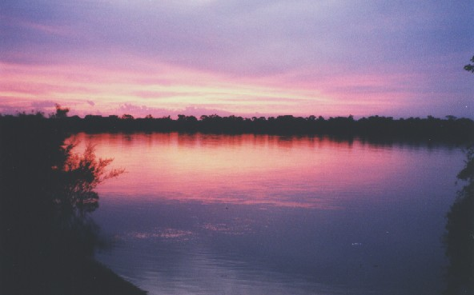
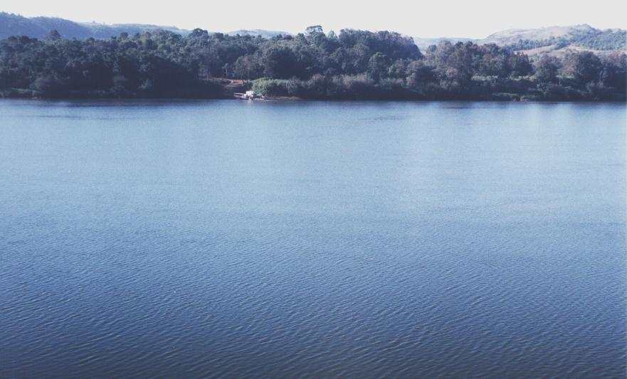
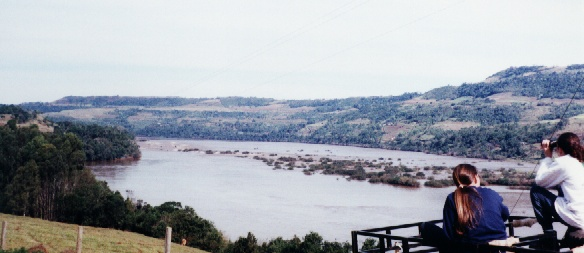
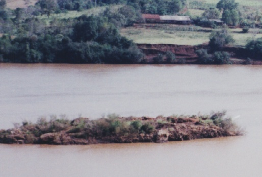
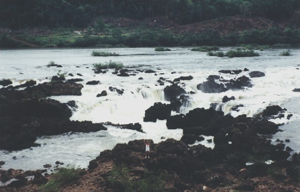
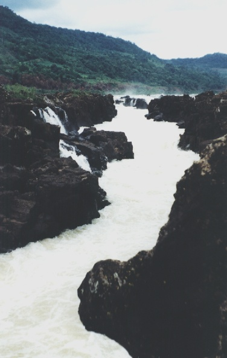

Para Índice Projetos
Projeto
Bacia do Rio Uruguai
Índice
Introdução
Planificação
Subprojeto Rio da Várzea
Subprojeto Rio Ibicuí

Local: São Borja - RS - Brasil Foto: arquivo CEPEN / 454p / Marcelo De Negri Xavier
Pôr-do-sol refletido no Rio Uruguai, talvez prenunciando dias melhores para suas águas.
Introdução
O Rio Uruguai é o terceiro maior rio da Província Platense,
e o mais meridional deles.
Estende-se por 1.838 Km, desde os contrafortes ocidentais da Serra Geral,
até o Rio da Prata, compreendendo uma bacia de 365.000 Km².
Ao norte, divide águas com o Rio Iguaçu, ao oeste com o Rio Paraná,
e ao sudeste com a Bacia da Laguna dos Patos.
Embora drenando águas de importante região agroindustrial,
a bacia do Rio Uruguai permanece um tanto ignorada pela ciência, e pelo sistema de fiscalização ambiental,
apresentando avançado estado de degradação.
Durante décadas seguidas, substanciais incentivos governamentais
foram destinados à atividade agrícola, dando importante impulso à economia. Porém, ...
Houve a quase extinção das reservas naturais de matas, resultando na
exposição dos recursos hídricos à ação dos fenômenos climáticos.
As enxurradas subseqüentes geraram erosão e a conseqüente turbidez,
bem como o envenenamento e o assoreamento dos leitos.
Esta política fomentou um grande avanço na produção
expandindo a área agrícola para estados vizinhos e para o centro-oeste do Brasil.
Nesta fase, o objetivo central era aumentar a superfície plantada
e não a busca por produtividade.
Restou deste período de fartura, a despreocupação com os recursos naturais
e um significativo desconhecimento das suas potencialidades econômicas.
Planificação
Para avaliar as condições ambientais atuais desta bacia,
o CEPEN achou importante estudar os dois tipos de rio que a formam.
Característica
Representante
Rios de altitude, que correm por solo "vermelho", e rocha oriundos das formações melafíricas;
O Rio da Várzea
Rios de planície, que correm por solo arenoso, oriundo das formações areníticas da base antiga da bacia;
O Rio Ibicuí
As atividades de pesquisa estão centradas na estrutura das comunidades de peixes,
e complementadas com registros de avifauna, herpetofauna, etc..
Tais resultados, acompanhados de avaliação das condições macroecológicas,
possibilitarão uma ampla visão geral
com boa profundidade em aspectos, valores e usos economicamente importantes,
que carecem de sustentabilidade na sua exploração,
pois estão sucumbindo à sua própria rapina.
Abaixo, algumas imagens do Rio Uruguai

Local: Mondaí - SC - Brasil Foto: arquivo CEPEN / 460u / Marcelo De Negri Xavier
Caminhões sobre balsa no Rio Uruguai.

Local: Itapiranga - SC - Brasil Foto: arquivo CEPEN / 463u / Marcelo De Negri Xavier
Cachoeiras da Pedra da Fortaleza. Queda d'água diagonal de alguns quilômetros.

Local: Itapiranga - SC - Brasil Foto: arquivo CEPEN / 464u / Marcelo De Negri Xavier
A antes famosa "Pedra da Fortaleza".
Situada no meio do rio, à jusante das cachoeiras,
era um dos grandes obstáculos a ser vencido pelas balsas madeireiras,
durante a colonização do sul do Brasil.
Somente em período de cheia, com a pedra encoberta, era possível lançar balsa neste trecho do rio.
Na situação em que estava no momento deste registro,
seria necessário uma elevação no nível d'água de aproximadamente seis metros, para cobri-la.

Local: Marcelino Ramos - RS - Brasil Foto: arquivo CEPEN / 646u / Marcelo De Negri Xavier
A famosa garganta do Estreito do Uruguai.
Atualmente coberta pelas águas da barragem de Itá.

Local: Marcelino Ramos - RS - Brasil Foto: arquivo CEPEN / 646u / Marcelo De Negri Xavier
O Estreito do Uruguai, propriamente dito, na foto está sob água. Na parte alta, vê-se a garganta.
Este corredor de águas, se estendia por aproximadamente 8 quilômetros,
com uma largura em torno de oito metros, onde passava toda a água do rio.
.